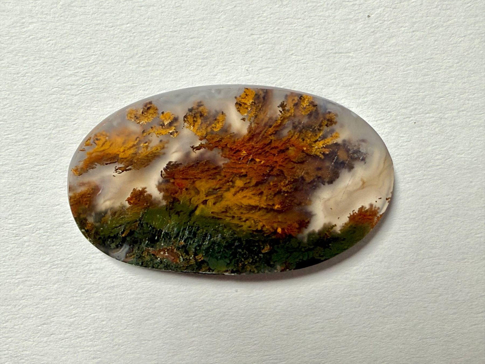
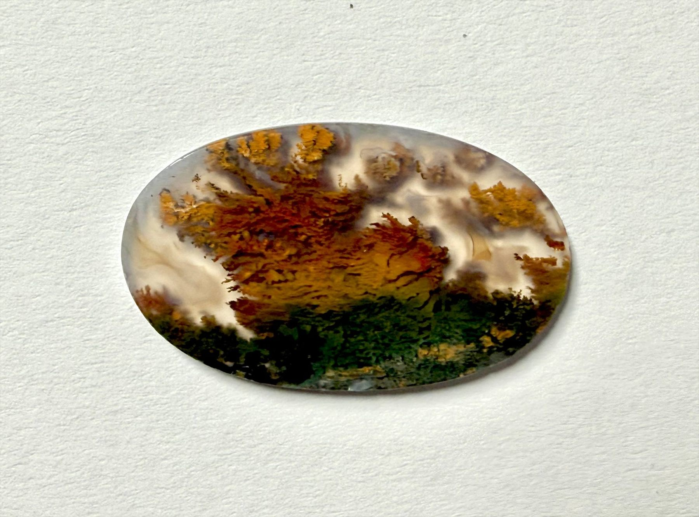
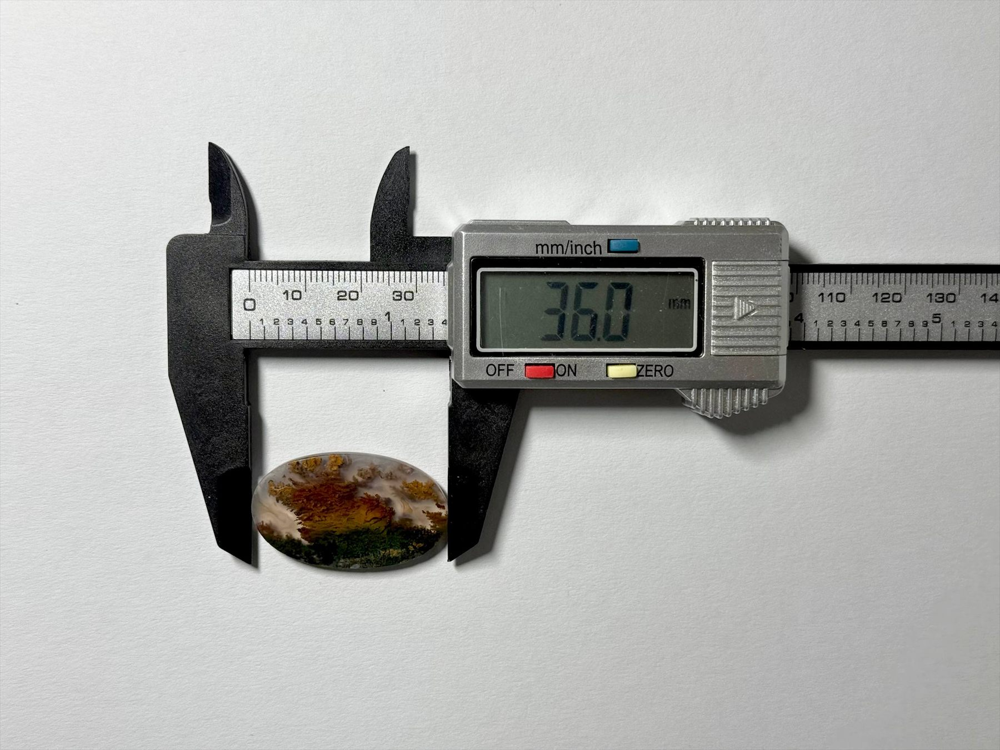

Certificate available on request
Certificate available on request
Autumn Horizon Agate looks like a compact autumn landscape held inside stone. Warm golden and amber plumes rise above a deep green base, recalling trees lit by evening light. A soft white haze around the edges adds a calm, dreamy depth. A unique 36 mm piece for anyone who prefers stones that feel alive rather than polished generic gems.


